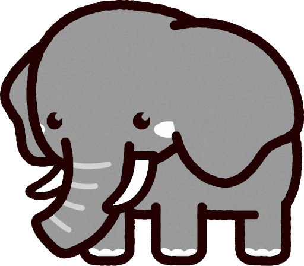
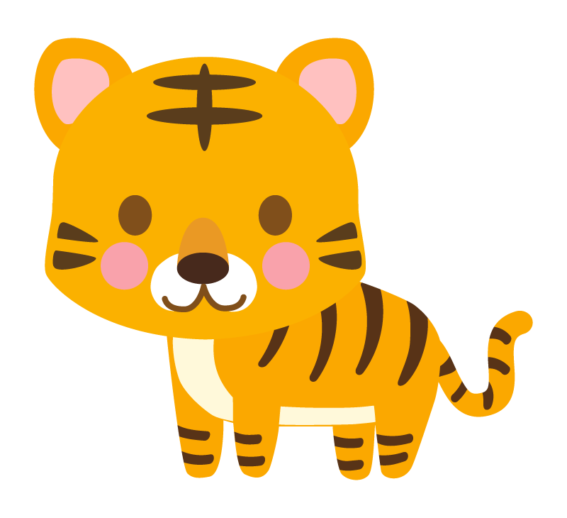
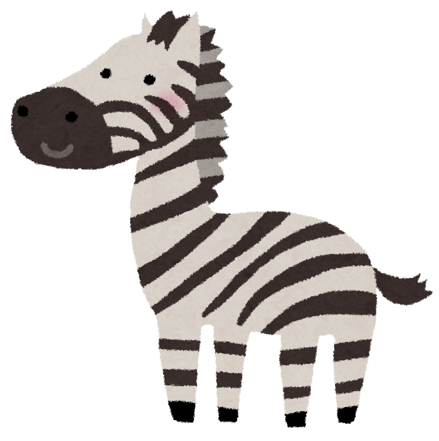
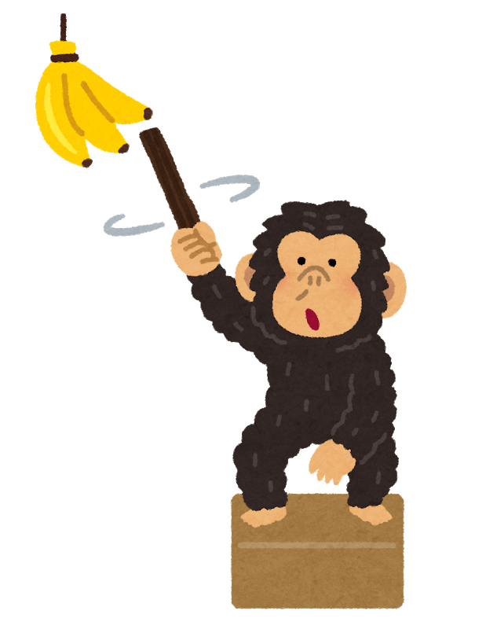
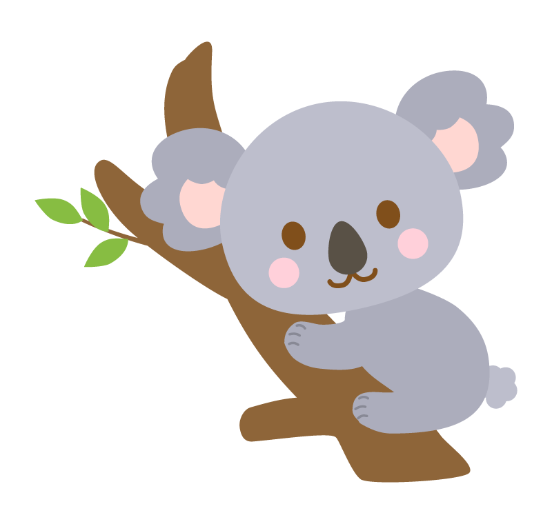
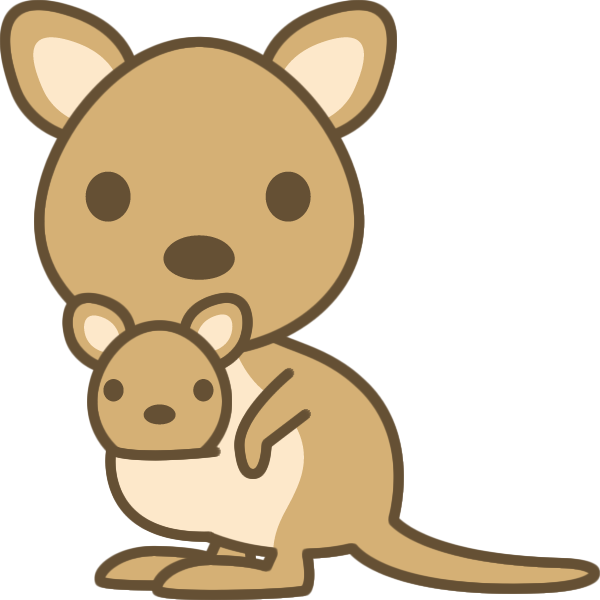

SOKA動物園に住む動物たちの紹介
エリア別
クリックで各エリアに飛べるよ！↓
※解説▼を押すと詳しい情報を表示できます
インドの森ゾーン
インドゾウ
パオくん
解説▼
インドライオン
シシオくん

解説▼
ベンガルトラ
ティガくん
解説▼
アフリカの草原ゾーン
グラントシマウマ
ジュリーくん
解説▼
キリン
ケイトちゃん

解説▼
チンパンジー
パンくん
解説▼
オーストラリアの自然ゾーン
コアラ
リクくん
解説▼
アカカンガルー
ボブくん
解説▼
本日のイベントスケジュール
| イベント概要 | 時間 | 場所 | |
|---|---|---|---|
| ゾウのサーカス | ゾウのパオくんがキャンバスに絵を書いたり、長いお鼻でバスケットボールをしたり、たくさんの特技を見せてくれます！！ | 12:30-13:00 | インドの森ゾーン |
| ライオンバス | ライオンを超間近で見れちゃいます！ご飯を食べているところもみれるかもしれません！ | 13:00-14:00 | |
| キリンの餌やり | キリンのケイトちゃんになんと口渡しで餌やりができちゃいます！ケイトの舌は一体どんな感じなのでしょうか？！ | 11:00-12:00 | アフリカの草原ゾーン |
| カンガルーのボクシング | カンガルーのボブくんが日課であるボクシングのトレーニングを行います！彼の力強いスパーリングをご覧ください | 14:00-15:00 | オーストラリアの大自然ゾーン |
| コアラの寝起きドッキリ | 1日中いつも寝ているコアラのリクくん、そんなリクくんに寝起きドッキリを仕掛けていきたいと思います！ | 17:00-17:30 |
詳しくは春のイベント特設ページをご覧ください！
※クリックで特設サイトにとべます

アクセス
交通手段別所要時間
最寄駅:八王子
| 電車でお越しの場合 | 車でお越しの場合 | バスでお越しの場合 | ||
|---|---|---|---|---|
| 新宿駅より | 中央線 | 京王線 | 1時間 | 約1時間20分 |
| 約45分 | 約1時間 | |||
| 東京駅より | 約1時間半 | 1時間45分 | 約2時間 | |